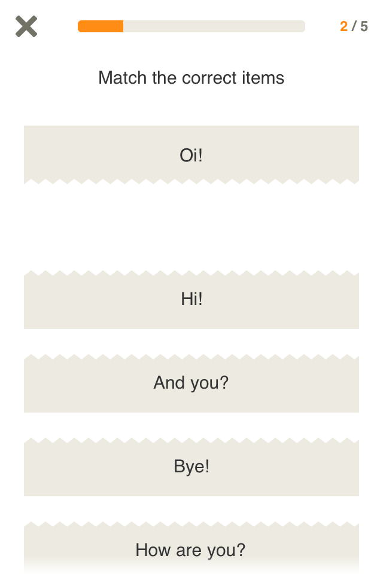
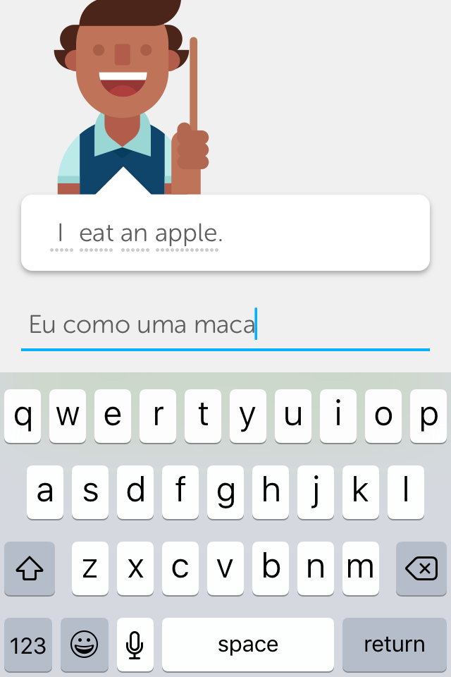
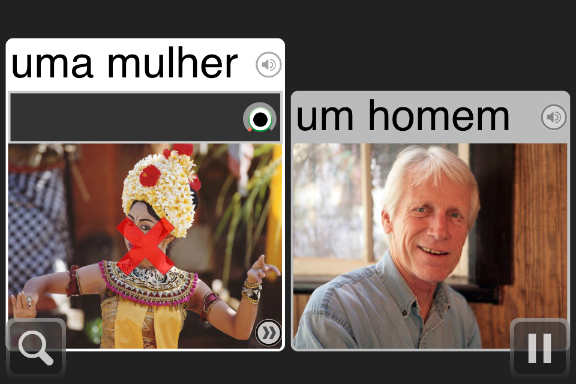
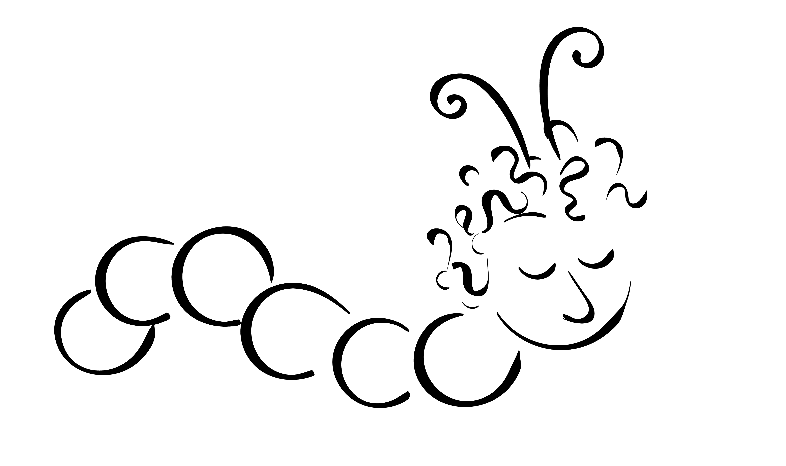

I intend to add lots of images to
this presentation before the Expo.
ECT Design Expo
Gui Bueno
Language Learning
Foreign Language Anxiety
Booth number __
[SCENARIO]
 

Touching your cellphone screen
Absolutely not
Distrustful

LanguageBug!
Infection
LANGUAGUE LEARNING superpowers
Again, come to booth ___.
Thank you.